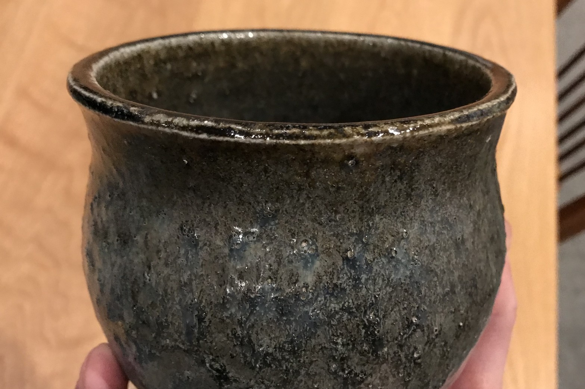
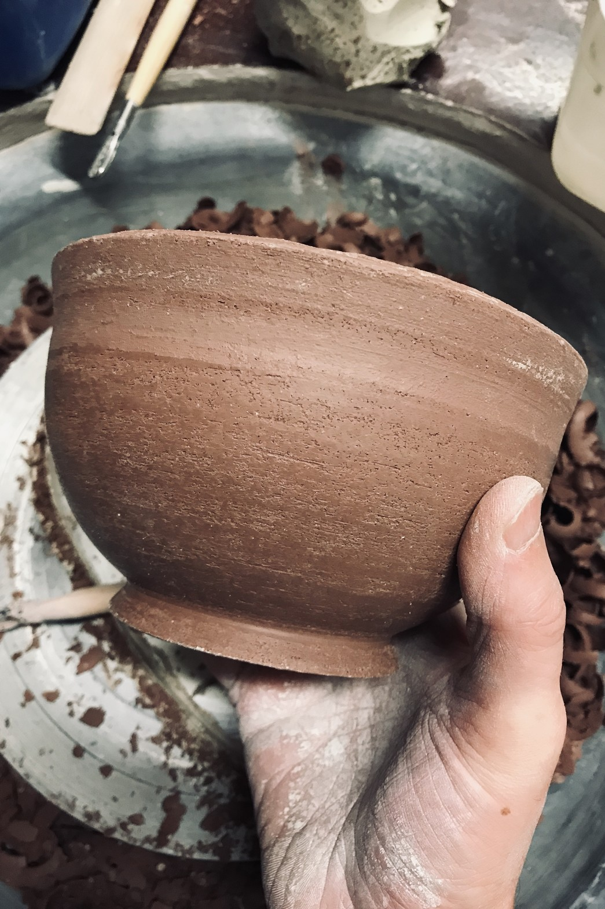
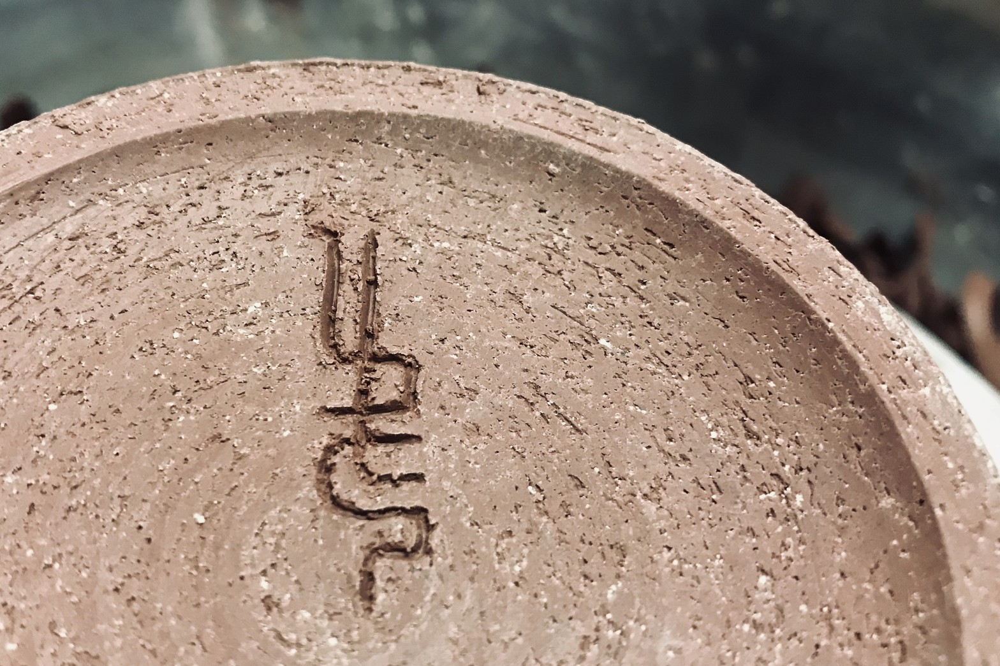
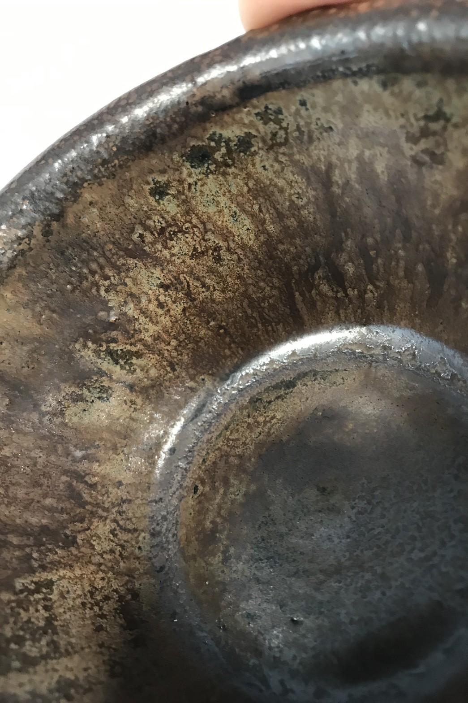
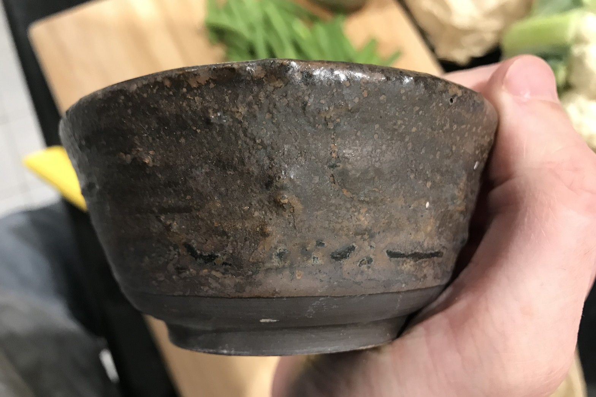

I practiced pottery for a little while at the Carlton Arts Centre. I wasn't very good, but I loved it. Seeing how a particular glaze has turned out is similar to watching the results of procedural generation - a collaboration between you and chaos.
Toady glaze | 2019-03-12Unfired wave bowl | 2019-02-26The origin of my mark | 2019-02-26Handmade stone | 2019-02-19Unpredictable action of iron | 2019-02-13Seeking corroded and rocky textures | 2019-02-12